lorenz_partial_additive_splitmode_p30_obsnoise005_nd75_init15_pcainit_autodim__lc_sweepProject: Lorenz_INDpartial_NDInitSweep_autodim_D1_NormTrue__JacobianODE
Launched: 2026-04-22T04:25:38Z
Completed: 2026-04-22T08:45:56Z
Outcome: complete_clean
Git: latent-JacobianODE @ 944fcaf
Expected runs: 5
lorenz_partial_additive_splitmode_p30_obsnoise005_nd75_init15_pcainit_autodim__lc_sweepDescription
Lorenz partial additive coupling, obs_noise=0.05, n_delays=75, prediction_steps=30, traj_init_steps=15. Split-mode trajectory loss (most_recent at train and val) + uniform encoder-decoder recon. n_target_dims auto-picked via PCA threshold=0.99. Encoder init via PCA-basis rotation (init_pca_basis=true). 5-run LC sweep over {0, 1e-6, 1e-5, 1e-4, 1e-3}.
Hypothesis
Same as the obsnoise001 PCA-init companion, but at higher noise. PCA init may help MORE here than at low noise: noise inflates variance roughly equally across all directions, so the top-PCs chosen by PCA-auto on noisy data should still capture the signal manifold cleanly, and starting the encoder rotated into that basis gives the dynamics MLP a head start. Identity init has to learn the rotation alongside the dynamics.
Success criteria
Swept axes (1): training.lightning.loop_closure_weight
Chosen run (by best_traj_loss): qx7s85sj — traj_loss=0.00515, MASE=0.7546, R²=0.9861, LC loss=7.618, epoch=113.0
Swept-axis values at chosen run: training.lightning.loop_closure_weight=0
Runs analyzed: 5 (expected 5)
| run_idx | run_id | training.lightning.loop_closure_weight |
best_traj_loss | best_MASE | R² | LC loss | epoch |
|---|---|---|---|---|---|---|---|
| 0 | qx7s85sj |
0 | 0.00515 | 0.7546 | 0.9861 | 7.618 | 113.0 |
| 1 | avtldx1b |
1.0e-06 | 0.00517 | 0.7549 | 0.9861 | 4.042 | 113.0 |
| 2 | 2josp5ek |
1.0e-05 | 0.00520 | 0.7557 | 0.9860 | 1.314 | 113.0 |
| 3 | ar8w5u2w |
1.0e-04 | 0.00525 | 0.7569 | 0.9859 | 0.322 | 113.0 |
| 4 | ym53fkj8 |
0.001 | 0.00568 | 0.7722 | 0.9849 | 0.068 | 107.0 |
| Criterion | Verdict | Note |
|---|---|---|
| All 5 runs train without divergence | Unknown | |
| Best val traj loss is comparable or better than identity-init companion sweep at the same LC | Unknown | |
| Convergence faster than identity-init companion | Unknown | |
| PCA-init's advantage over identity (if any) is at least as large at noise=0.05 as at noise=0.01 | Unknown |
Automated verdicts use simple numeric-threshold parsing and may mis-classify qualitative criteria. The Discussion section below takes precedence.
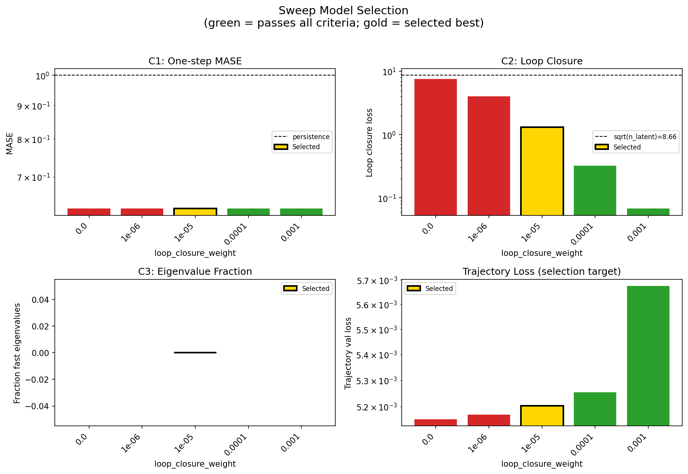
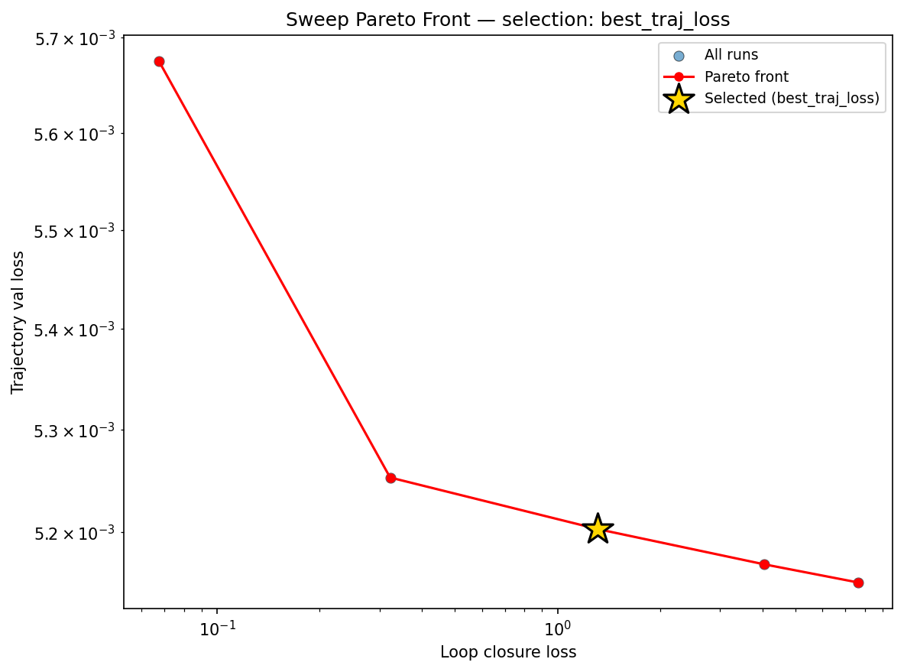
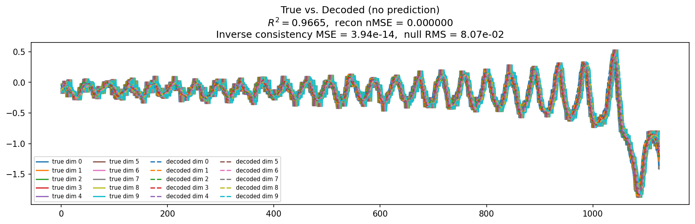
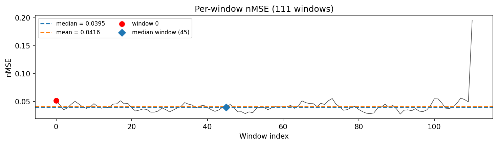
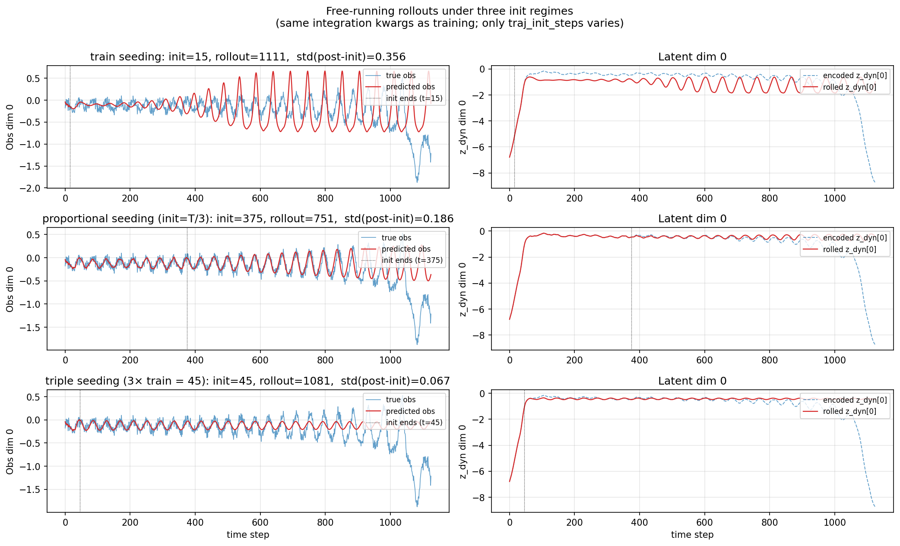
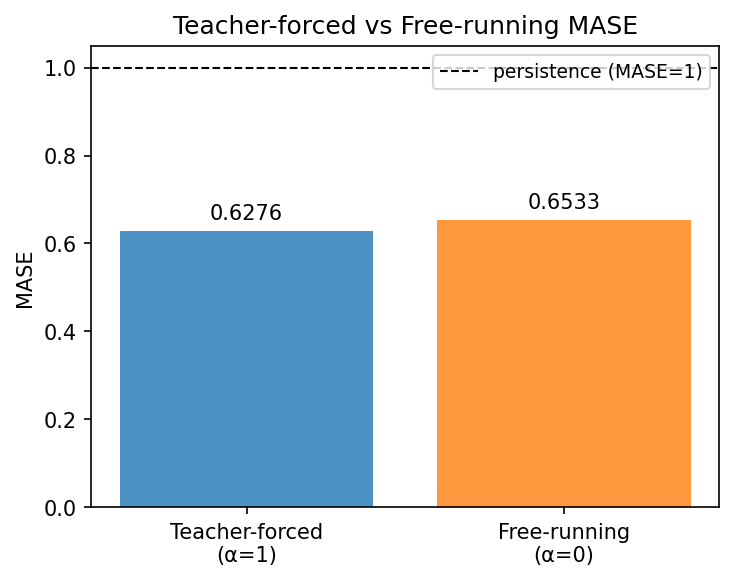
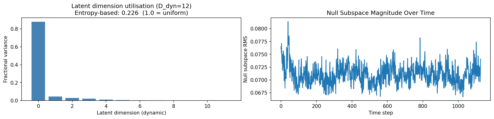
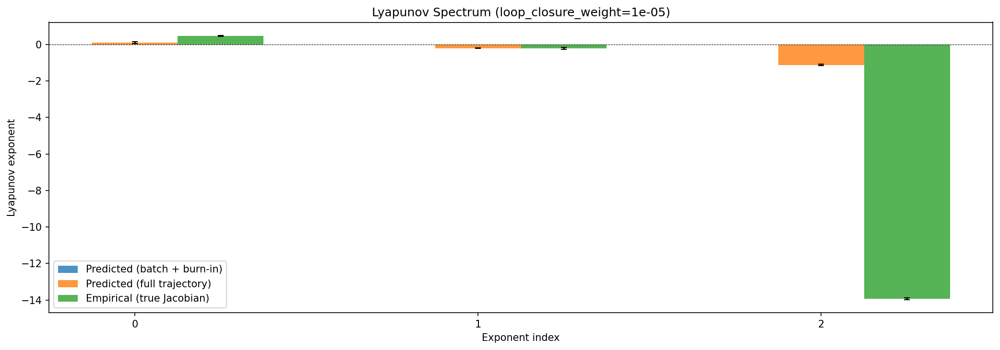
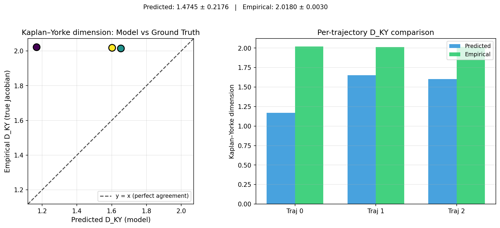
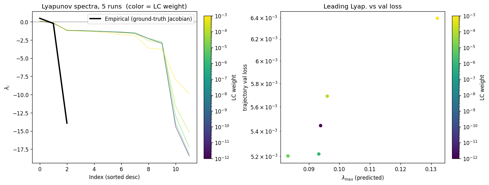
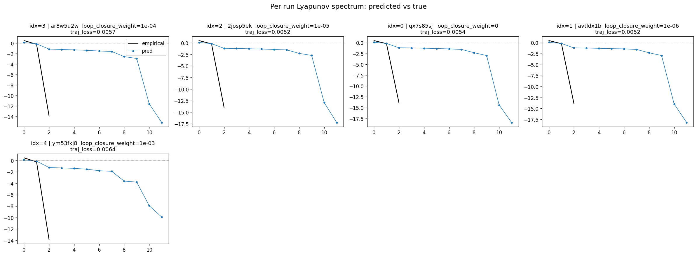
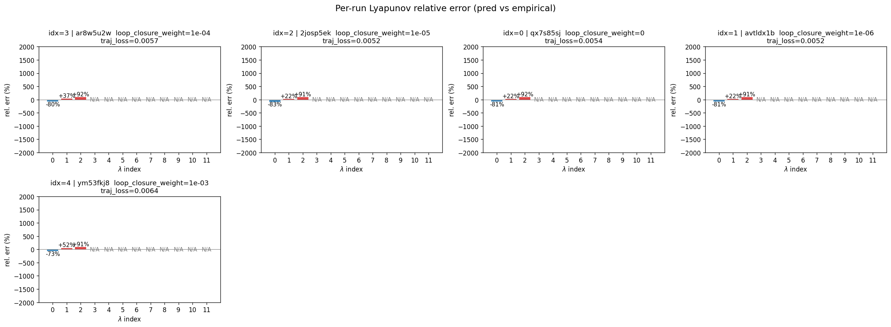
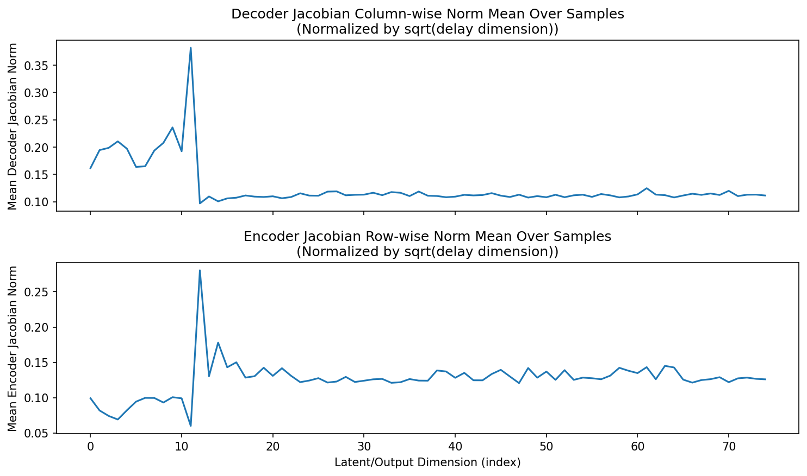
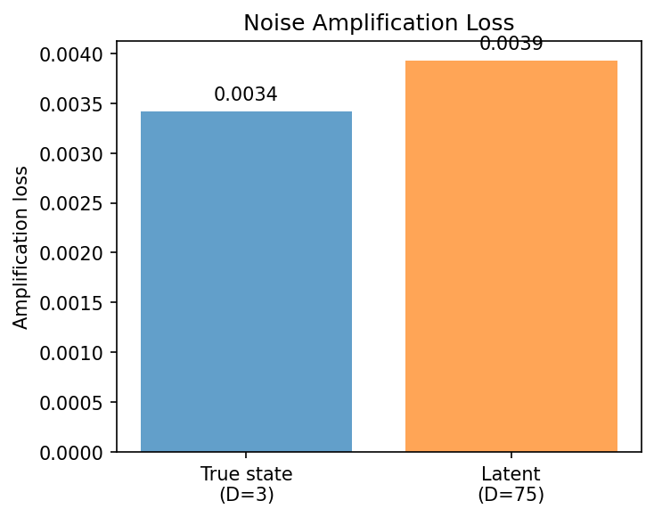
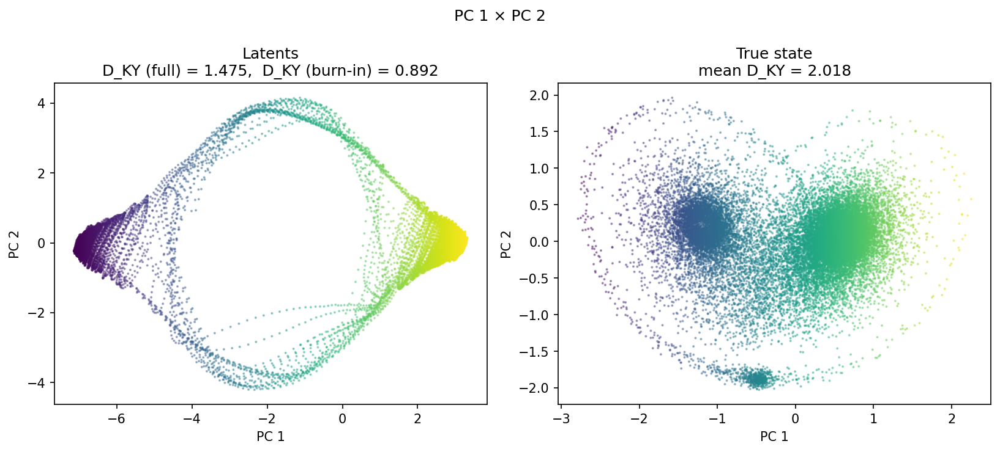
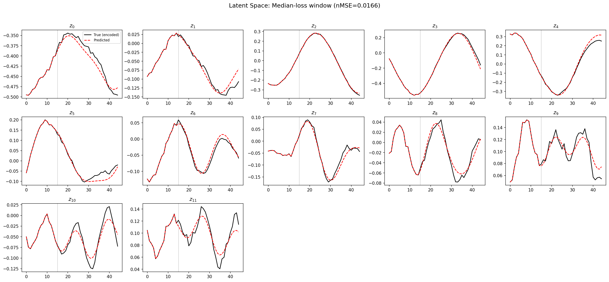
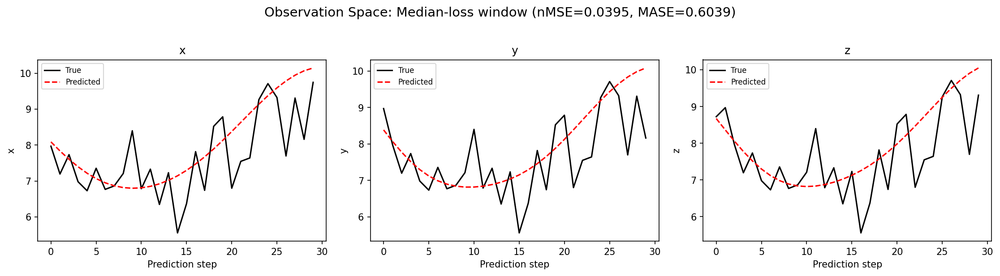
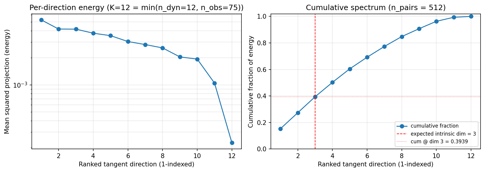
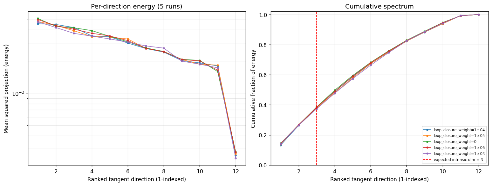
(to be written)
run_analytics stdoutrun_analyticsNo run_id provided — selecting best run from group 'lorenz_partial_additive_splitmode_p30_obsnoise005_nd75_init15_pcainit_autodim__lc_sweep' ...
Found 5 total runs in JacobianODE/Lorenz_INDpartial_NDInitSweep_autodim_D1_NormTrue__JacobianODE (group=lorenz_partial_additive_splitmode_p30_obsnoise005_nd75_init15_pcainit_autodim__lc_sweep)
All runs (state, loop_closure_weight, tangent_entropy_weight, kl_dyn_weight):
ar8w5u2w: state=finished, lc=0.0001, te=0.0, kl_dyn=0.0
2josp5ek: state=finished, lc=1e-05, te=0.0, kl_dyn=0.0
qx7s85sj: state=finished, lc=0.0, te=0.0, kl_dyn=0.0
avtldx1b: state=finished, lc=1e-06, te=0.0, kl_dyn=0.0
ym53fkj8: state=finished, lc=0.001, te=0.0, kl_dyn=0.0
slurm_timeout_min not found in any run config — falling back to 180 min
Including ar8w5u2w (lc=0.0001): use_all_runs=True (state=finished)
Including 2josp5ek (lc=1e-05): use_all_runs=True (state=finished)
Including qx7s85sj (lc=0.0): use_all_runs=True (state=finished)
Including avtldx1b (lc=1e-06): use_all_runs=True (state=finished)
Including ym53fkj8 (lc=0.001): use_all_runs=True (state=finished)
Found 5 effectively-done sweep runs:
loop_closure_weight=0.0, tangent_entropy_weight=0.0, kl_dyn_weight=0.0 -> run_id=qx7s85sj
loop_closure_weight=1e-06, tangent_entropy_weight=0.0, kl_dyn_weight=0.0 -> run_id=avtldx1b
loop_closure_weight=1e-05, tangent_entropy_weight=0.0, kl_dyn_weight=0.0 -> run_id=2josp5ek
loop_closure_weight=0.0001, tangent_entropy_weight=0.0, kl_dyn_weight=0.0 -> run_id=ar8w5u2w
loop_closure_weight=0.001, tangent_entropy_weight=0.0, kl_dyn_weight=0.0 -> run_id=ym53fkj8
n_dims=75, n_latent=75, n_dyn=12, dt=0.0150
run=qx7s85sj: DiagnosticMetrics(one_step_mase=0.6265553832054138, loop_closure_loss=7.617521286010742, fast_eigenvalue_fraction=0.0, trajectory_val_loss=0.0051519679836928844) (from W&B history)
run=avtldx1b: DiagnosticMetrics(one_step_mase=0.6265323758125305, loop_closure_loss=4.041628360748291, fast_eigenvalue_fraction=0.0, trajectory_val_loss=0.005169317126274109) (from W&B history)
run=2josp5ek: DiagnosticMetrics(one_step_mase=0.6264438033103943, loop_closure_loss=1.3135191202163696, fast_eigenvalue_fraction=0.0, trajectory_val_loss=0.005203159525990486) (from W&B history)
run=ar8w5u2w: DiagnosticMetrics(one_step_mase=0.6263571381568909, loop_closure_loss=0.32231709361076355, fast_eigenvalue_fraction=0.0, trajectory_val_loss=0.005253246054053307) (from W&B history)
run=ym53fkj8: DiagnosticMetrics(one_step_mase=0.626733124256134, loop_closure_loss=0.06756559014320374, fast_eigenvalue_fraction=0.0, trajectory_val_loss=0.005675019230693579) (from W&B history)
Ranking method: best_traj_loss
Best run ID: 2josp5ek
Best loop_closure_weight: 1e-05
Best tangent_entropy_weight: 0.0
Best kl_dyn_weight: 0.0
Best traj loss: 0.005203
Criteria applied: ['C1', 'C2', 'C3']
Surviving: 3 / 5
Auto-selected run_id: 2josp5ek
======================================================================
PARETO FRONTIER RUNS (5 runs)
======================================================================
Run ID LC Loss Traj Val Loss
------------ -------------- --------------
ym53fkj8 0.067566 0.005675
ar8w5u2w 0.322317 0.005253
2josp5ek 1.313519 0.005203 <-- selected
avtldx1b 4.041628 0.005169
qx7s85sj 7.617521 0.005152
======================================================================
RANKING METHOD COMPARISON (over 3 survivors)
======================================================================
Method Run ID LC Loss Traj Val Loss
---------------------- ------------ -------------- --------------
best_traj_loss 2josp5ek 1.313519 0.005203 <-- active
pareto_knee ar8w5u2w 0.322317 0.005253
geo_rank 2josp5ek 1.313519 0.005203
minimax_rank ar8w5u2w 0.322317 0.005253
geo_log_score 2josp5ek 1.313519 0.005203
minimax_log_score ar8w5u2w 0.322317 0.005253
======================================================================
Loading run 2josp5ek from JacobianODE/Lorenz_INDpartial_NDInitSweep_autodim_D1_NormTrue__JacobianODE ...
Train dataset shape: torch.Size([23782, 45, 75])
Validation dataset shape: torch.Size([7567, 45, 75])
Test dataset shape: torch.Size([3243, 45, 75])
Train trajectories dataset shape: torch.Size([22, 1126, 75])
Validation trajectories dataset shape: torch.Size([7, 1126, 75])
Test trajectories dataset shape: torch.Size([3, 1126, 75])
Loading checkpoint epoch=113-step=22800.ckpt...
Computing reconstruction ...
Computing MASE ...
Teacher-forced MASE: 0.6276
Free-running MASE: 0.6533
Computing latent utilization ...
Entropy-based utilization: 0.226
Null subspace mean RMS: 7.111539e-02
Computing Lyapunov exponents ...
Computing full-trajectory Lyapunov (3 test trajs, T=1126) ...
Predicted Lyapunov exponents (batch+burn-in, 128 windowed trajs):
λ_1 = +nan ± nan
λ_2 = +nan ± nan
λ_3 = +nan ± nan
λ_4 = +nan ± nan
λ_5 = +nan ± nan
λ_6 = +nan ± nan
λ_7 = +nan ± nan
λ_8 = +nan ± nan
λ_9 = +nan ± nan
λ_10 = +nan ± nan
λ_11 = +nan ± nan
λ_12 = +nan ± nan
Predicted Lyapunov exponents (full-length, 3 test trajs):
λ_1 = +0.0984 ± 0.0595
λ_2 = -0.2001 ± 0.0208
λ_3 = -1.1197 ± 0.0303
λ_4 = -1.1436 ± 0.0174
λ_5 = -1.1603 ± 0.0097
λ_6 = -1.2047 ± 0.0214
λ_7 = -1.2534 ± 0.0326
λ_8 = -1.3846 ± 0.0817
λ_9 = -2.0446 ± 0.1426
λ_10 = -2.3501 ± 0.0910
λ_11 = -13.6149 ± 0.2787
λ_12 = -17.9278 ± 0.1011
Empirical Lyapunov exponents (mean ± std):
λ_1 = +0.4677 ± 0.0259
λ_2 = -0.2173 ± 0.0549
λ_3 = -13.9174 ± 0.0513
Mean KY dim (predicted): 1.475 ± 0.218
Mean KY dim (empirical): 2.018 ± 0.003
Mean KY dim (burn-in): 0.892 ± 0.725
Computing prediction windows ...
Windows: 111 — nMSE min=0.0276, median=0.0395, mean=0.0416, max=0.1952
Computing long-trajectory free-running rollouts ...
Computing encoder/decoder Jacobians ...
encoder_jacobian: (128, 75, 75)
decoder_jacobian: (128, 75, 75)
Computing amplification loss ...
Amplification loss — True state: 0.003419
Amplification loss — Latent: 0.003930
Computing tangent space spectrum ...